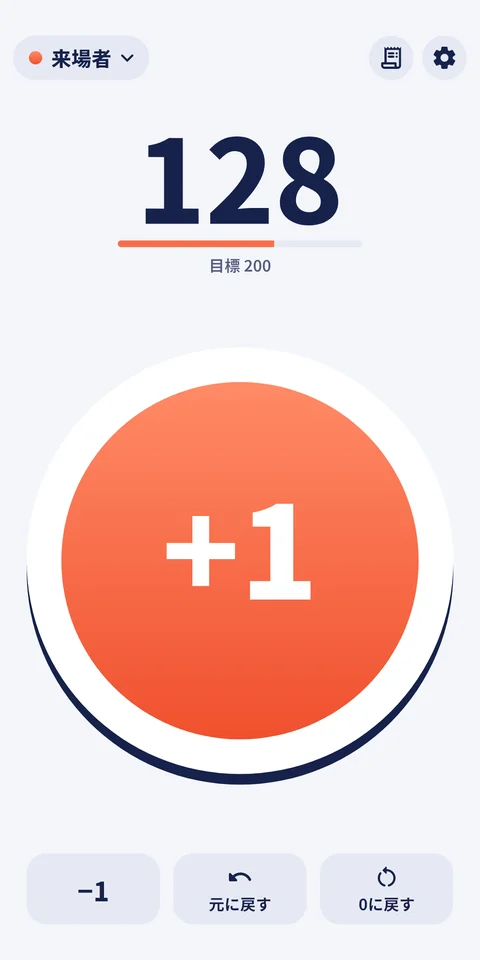
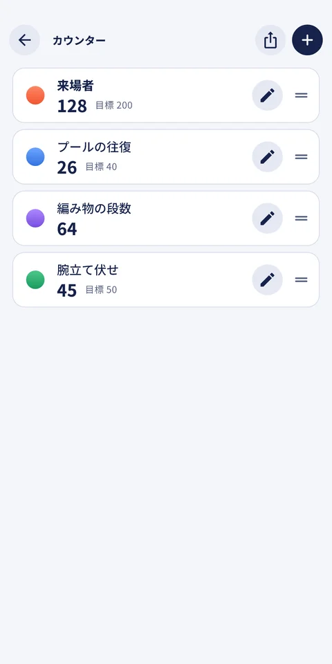
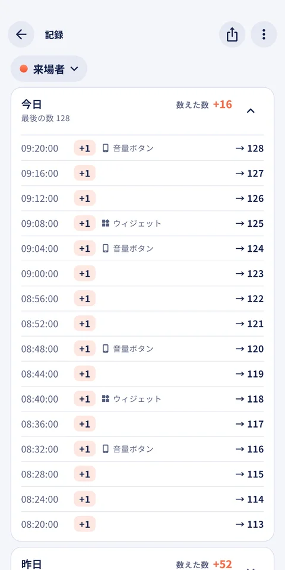
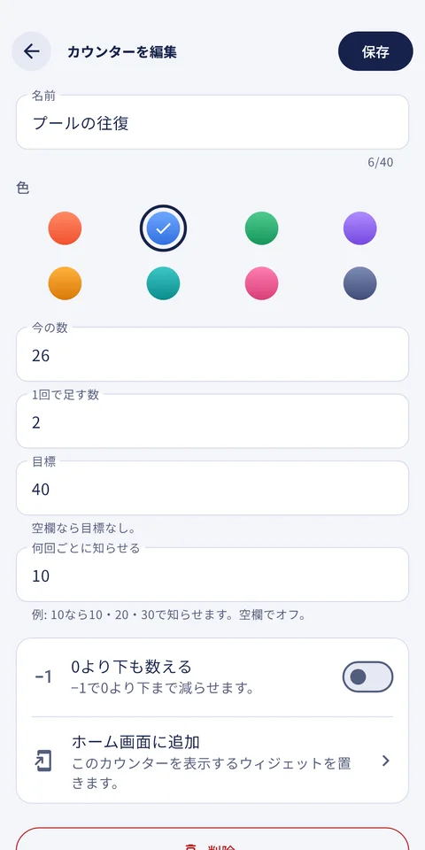

スクリーンショット






アプリについて
| アプリ名 | TapAlot |
|---|---|
| バージョン | 1.0.0 |
| 開発 | Willee Project |
| 対応プラットフォーム | Android |
タップするたびに数が1つずつ増えるカウンターアプリです。入場者、在庫、運動の回数、編み物の段数など、「何回か」を数えたいときに使います。
- 会員登録もログインもありません。作ったカウンターと記録は端末の中に保存されます。
- インターネットがなくても使えます。 インターネットは画面下の広告と、利用統計・エラー報告の送信にだけ使います。
- 言語は端末の設定に従います。日本語・英語・韓国語・中国語（簡体字・繁体字）に対応し、設定で直接選ぶこともできます。
- 数が変わるたびに、すぐ端末に保存されます（9章）。
1. はじめに
- アプリを開くと、最後に使ったカウンターのカウント画面がすぐに開きます。最初はカウンター1が開きます。
- 上のバーのカウンター名をタップすると、カウンターの一覧に移ります。新しいカウンターはそこで作ります（3章）。
- 上のバーには、カウンター名のほかに記録（5章・6章）と設定（8章）のボタンがあります。
2. 数える
カウント画面の中央に今の数が大きく表示され、その下に大きな+1ボタンがあります。ボタンの下には1を引く・元に戻す・0に戻すがあります。
- +1ボタン: 指が触れた瞬間に数えます。指を離すのを待たないので、速く続けてタップできます。反応するのは丸いボタンの中だけで、円の外をタップしても数えません。
- 1を引く: 数を1減らします。初期設定では0より下には減りません（4章の0より下も数える）。
- 元に戻す: 直前の変化（足す・引く・0に戻す・数の変更）を取り消します。続けて押すと、その前の変化も順に戻ります。
- 0に戻す: 数を0に戻します。先に「0に戻しますか？」という確認の画面が出ます。今の数は記録に残り、元に戻すで戻せます。
- 数が変わると、数字が弾みます。設定のエフェクトを減らすをオンにするか、端末のユーザー補助の設定でアニメーションをオフにすると弾みません。
- ボタンと広告のあいだの細い帯は、タップしても反応しません。
3. カウンター一覧
上のバーのカウンター名をタップすると開きます。カウンターはいくつでも作れます。
- カウンターをタップすると、そのカウンターのカウント画面が開きます。
- 上の新しいカウンターボタンで作ります。
- 行の右端のカウンターを編集ボタンで内容を変えます（4章）。
- 並べ替え: 行のハンドルをドラッグするか、行を長押ししてドラッグします。
- 削除は編集画面にあります。削除すると「削除しました: 名前」と元に戻すがしばらく出ます。削除したカウンターは、一覧の一番下の削除したカウンターに7日間残り（「N日後に消えます」）、そこで復元をタップすると記録と一緒に戻ります。7日たつと記録と一緒に消えます。
- カウンターが1つだけになると、削除ボタンはありません。カウンターは常に1つ以上あります。
- 上のすべてエクスポート(CSV)ボタンで、すべてのカウンターの記録をファイルにして送ります（6章）。
4. カウンターの編集
| 項目 | 内容 |
|---|---|
| 名前 | カウンターの名前です（40文字まで）。空にすると「カウンター1」のように番号付きの名前で表示されます |
| 色 | 8色から選びます。カウント画面とウィジェットに使われます |
| 開始の数 | 新しいカウンターを作るときだけあります。最初の数です |
| 今の数 | すでにあるカウンターを編集するときに出ます。数を変えると「数を変更」が記録に残り、元に戻すで戻せます |
| 1回で足す数 | +1ボタンを1回タップしたときに足す数です（1〜9999）。初期値は1です |
| 目標 | 空欄なら目標なしです（5章） |
| 何回ごとに知らせる | 例: 10なら10・20・30で音と振動で知らせます。空欄でオフです。1回で足す数が大きくて倍数を飛び越したときも知らせます。引くときと0に戻すときは知らせません |
| 0より下も数える | オンにすると、1を引くで0より下まで減らせます。初期設定はオフです |
- 保存をタップすると変更が反映されます。
- ホーム画面に追加: このカウンターを表示するウィジェットを置きます（7章）。
- 削除: このカウンターを削除します（3章）。
5. 目標と記録画面
目標
- 目標を決めると、今の数の下に進み具合のバーと「目標 50」が表示されます。
- 数が目標に達すると「目標達成」に変わり、音と振動で知らせます。音と振動は設定に従います（8章）。
記録
上のバーの記録ボタンで開きます。数が変わるたびに1行ずつ残った記録を表示します。
- 最初は数える画面のカウンターの記録が表示されます。上のカウンター名のボタンをタップすると、ほかのカウンターを選んでその記録を見られます。数える画面のカウンターは変わりません。
- 記録は、そのときの現地の日付ごとにまとめられます。日付の行には、数えた数（「数えた数 +16」。その日に足した数から引いた数を引いたもので、0に戻すと数の変更は含みません）、最後の数（「最後の数 120」。その日の最後の数）、0に戻す回数（「0に戻す 2回」）が表示されます。
- 日付をタップすると開き、その日の行が新しいものから並びます。行ごとに時刻、変化（足す・引く・0に戻す・数を変更）、増減、数が表示され、音量ボタンやウィジェットで数えた行にはその印が付きます。1日の行がとても多いときは、最新の500件だけ表示します（エクスポートにはすべて入ります）。
- 記録が20万行を超えると、古い日から日ごとの合計のみを残します。そのような日は開いても行がなく、最後に「古い記録は日ごとの合計にまとめました。」と表示されます。今日の行はまとめません。
- 右上のメニューの記録を消すは、このカウンターの記録をすべて消します。今の数はそのままです。
6. エクスポート(CSV)
記録を CSV ファイルにしてエクスポートします。ボタンをタップすると、共有と端末に保存のどちらかを選びます。
- 共有: 端末の共有画面に渡します。受け取るアプリ（メール、クラウドストレージなど）はご自身で選びます。
- 端末に保存: ファイルの保存画面でフォルダと名前を選び、この端末に保存します。保存すると「端末に保存しました。」が表示されます。
- 1つのカウンター: 記録画面の右上のエクスポート(CSV)ボタンをタップします。記録画面で見ているカウンターの記録です。
- すべてのカウンター: カウンター一覧のすべてエクスポート(CSV)ボタンをタップします。
- ファイルを作っているあいだは「CSVファイルを作成しています…」と表示されます。作れなかったときは「ファイルを作成できませんでした。もう一度お試しください。」と出ます。
- 列はカウンター・日付・時刻・変化・増減・数・操作元です。日ごとの合計にまとめた日は、日ごとの合計の1行になります。
- 表計算ソフトで開けます。
- ファイルにはカウンターの名前と記録が入ります。開発者には送りませんが、受け取った人は読めるので、送る前にご確認ください。
7. ホーム画面のウィジェット
アプリを開かずに、ホーム画面でタップして数えます。
置く
- アプリから: カウンターの編集画面のホーム画面に追加をタップします。そのカウンターを表示するウィジェットが置かれます。端末がアプリからの追加に対応していないときは「ウィジェットを置く」の案内が出ます。そのカウンターを開いておくので、ホーム画面の空いている所を長押しし、「ウィジェット」から TapAlot をドラッグして置いてください。
- ホーム画面から: 空いている所を長押しし、ウィジェットの一覧から TapAlot ウィジェットをドラッグして置きます。この方法で置いたウィジェットは、最後に使ったカウンターを表示します。
使う
- ウィジェットをタップすると、アプリを開かずに「1回で足す数」だけ増え、短く振動します。振動はアプリのバイブレーションの設定に従います。音は鳴りません。
- 目標があるカウンターは、ウィジェットにも進み具合が表示されます。
- 右上の小さなアイコン（アプリを開く）をタップするとアプリが開きます。
- ウィジェットを小さくすると、数字だけが表示されます。
- ウィジェットで数えた分は、アプリを開いたとき・前面に戻ったときに記録へ足され、記録には「ウィジェット」と残ります。間違ってタップしたときは、アプリの元に戻すで戻します。
- カウンターを削除すると、そのウィジェットには「タップしてアプリを開く」と表示され、タップするとアプリが開きます。
8. 設定
カウント画面の上のバーの設定ボタンで開きます。グループは二つです。
サウンドと効果
| 項目 | 内容 |
|---|---|
| 効果音 | タップと目標の音をオン・オフします |
| バイブレーション | タップと目標の振動をオン・オフします。ウィジェットの振動もこの設定に従います |
| エフェクトを減らす | 数字が弾むなどの演出を控えめにします |
| 画面をつけたままにする | カウント画面で、画面が消えないようにします。最後のタップから10分たつと解除します。初期設定はオンです |
| 音量ボタンで数える | オンにすると、音量の上ボタンで足し、下ボタンで1を引きます。カウント画面でだけ使え、その間はボタンで音量が変わりません。画面が消えているあいだは数えません。初期設定はオフです |
音量ボタンで数えた行は、記録に「音量ボタン」と残ります。
一般
| 項目 | 内容 |
|---|---|
| 言語 | 端末の言語（初期設定）に従うか、一覧から選びます（English · 日本語 · 한국어 · 简体中文 · 繁體中文） |
| プライバシー設定 | 広告の同意の画面を開き直します。同意が必要な地域（欧州など）でのみ表示されます |
| このアプリについて | バージョン、この説明書（使い方）、Google Playで評価する、プライバシーポリシー、オープンソースライセンス、ほかのアプリ（タップするとストアが開きます）とすべてのアプリを見る |
画面の色は端末のダークモードに従います。アプリの中に別のスイッチはありません。
9. 保存・バックアップ・広告
- 保存: 数が変わるたびに、すぐ端末に保存します。アプリを閉じたり強制終了したりしても、数えた数は残ります。1日に1回、自動バックアップに含まれない場所に保存ファイルのコピーを1つ置き、ファイルが壊れたときに戻すために使います。
- バックアップ: Google バックアップ（Android の自動バックアップ）がオンなら、カウンター・記録・設定も一緒にバックアップされ、機種変更やアプリの再インストールのときに戻ります。不要な場合は Android の設定のバックアップのメニューでオフにできます。アプリを削除すると、端末のデータも消えます。
- 広告: 画面の一番下にバナー広告が1つあります。これが唯一の広告で、カウント画面の大きなボタンとバナーのあいだには余白があります。キーボードが出ているあいだは広告の帯が隠れます。同意が必要な地域（欧州など）では、最初に開いたときに広告の同意の画面が表示され、あとから設定のプライバシー設定で変更できます。
- アプリ内課金はありません。サーバーへ送るものもありません。
- くわしくはプライバシーポリシーをご覧ください。